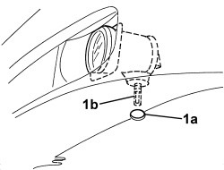

5540D38 FOG LIGHT BEAM - ADJUST
- Path
- Procedures > 55 ELECTRICAL EQUIPMENT > 5540 EXTERIOR LIGHTING > 5540D FOG LIGHTS > 5540D38 FOG LIGHT BEAM - ADJUST
- Kind
- repair procedure (removal / refitting; the operation number is the code)
- Applies to
- all engines; all production periods
- Interactive page
- https://sloeber94.github.io/elrnDB-aBrrSpdr/en/#/946002413
Applies to: all engines; all production periods
- Position the vehicle complete with spare wheel, tools, fluids, fuel reserve.
- Check that the tyre inflation pressure is correct.
- Position the vehicle on a flat surface, perpendicular to a screen or opaque surface 10 metres away on which a line corresponding to the height from the ground (A) of the centre of the fog lights has been traced.
1. Switch on the fog lights and, via the opening (1a) regulate the adjustment screw (1b) so that the demarcation line between the dark area and the area lit up by the light beam is at height B = (A -13) cm.
